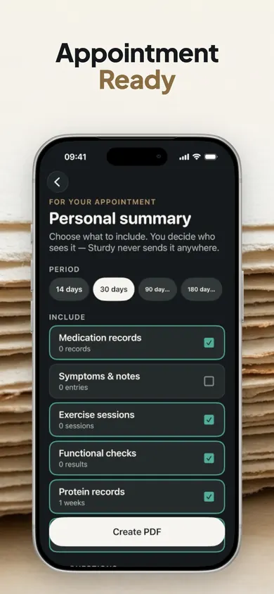
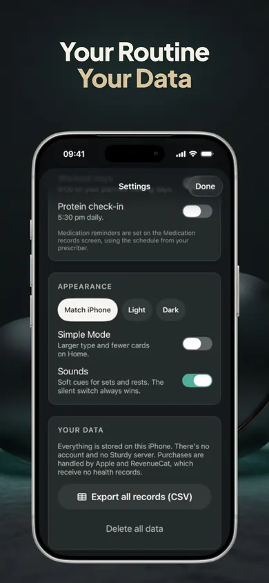

Bring the details.
Keep your voice.
For adults recording strength sessions: choose what to bring, then put your main question first.
Instead of: "My workouts were bad."
Try a factual note: "I recorded two sessions last week. I shortened one. I want to discuss what I noticed."
An illustration of wording, not a suggested routine or medical conclusion.
iPhone · iOS 18+ · Optional in-app purchases
By Honest Little Apps, Sturdy's publisher

What belongs in a workout summary?
Bring the dates and activities you actually recorded, any changes you want to discuss, and your most important question. Keep observations separate from explanations you have not confirmed. A short summary starts a conversation; it does not establish a diagnosis or prove a treatment effect.
The National Institute on Aging recommends listing and prioritizing concerns before a visit. This guide applies that preparation advice to a workout conversation. It is general information, not medical advice. Talk to your clinician.
Choose your starting point.
No health details to type. Your choices stay on this page, are not saved, and reset when you reload.
01 / Your record
What can you bring?
02 / Your priority
What do you want to discuss?
03 / Your format
How will you use the outline?
Your outline
Make the three choices.
Then use the prompts below to prepare your own note privately. No scores, diagnoses or workout prescriptions.
One change. Two different statements.
Imagine you shortened a session on Tuesday. "I stopped after ten minutes" describes an event. "My medication caused muscle loss" assigns a cause the record cannot establish.
Use your own words for what happened, when it happened, and what you want to ask. You do not need to make your note sound clinical. If you are unsure of a date, say that rather than filling the gap with a precise-looking guess.
Keep the question visible.
"What should I ask about my routine?" is different from "What should I do next?" Bring the record to your clinician and ask for guidance appropriate to you. This tool cannot assess symptoms or decide whether exercise is safe.
If you need help with a current health concern, contact an appropriate healthcare service rather than waiting to finish this worksheet or for a routine appointment.
Paper, this page, or Sturdy?
| Option | Useful for | Limit |
|---|---|---|
| A paper note | A question and a few observations | You gather and organize the records. |
| This free guide | Choosing a discussion outline | No records, storage, app import or medical assessment. |
| Sturdy | Self-recorded sessions and a selectable appointment PDF | Records are self-reported. The app does not diagnose or give medication advice. |

Carry the record forward.
- Record in Sturdy. Keep your own session history and notes.
- Choose the sections. Include the information you want in your appointment summary.
- Review, then share. Check the self-recorded details and decide who receives the PDF.
Sturdy is designed for adults using prescribed weight-management medication under medical care. Its current App Store listing includes 30-day summaries in the free tier; longer 90- and 180-day summaries are Pro features.
Choose paper if you only need a one-off note. Choose Sturdy if you want an ongoing place for your records. The browser outline does not transfer into the app.
Sources and limits.
- National Institute on Aging: preparing for a doctor's appointment - prioritizing concerns and bringing relevant information. Reviewed for this page November 4, 2026.
- National Institute on Aging: what to tell the doctor - describing observations and their timing in your own words. Reviewed November 4, 2026.
- Sturdy's App Store listing - product features and free/Pro limits checked November 4, 2026. Availability and offers can vary by region.
The example and decision outline are original editorial aids from Honest Little Apps. They are not a validated clinical questionnaire, a symptom checker, or evidence of health benefits.
Your next visit has a starting point.
Keep your main question beside the records you want to discuss. If you want to keep those records together between appointments, explore Sturdy.
Download free on the App StoreFree download with optional in-app purchases. No outcome guarantees.
Before you summarise an incomplete session
Use the unfinished workout recordkeeping guide to distinguish planned work, completed work and missing information.